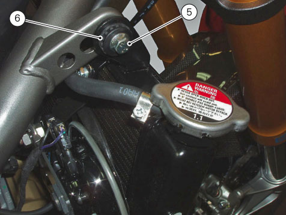
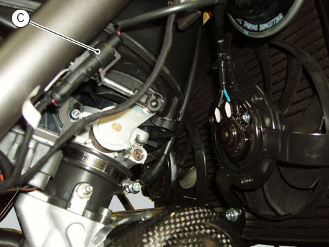

Installation of the radiator
Check the presence of vibration dampers (10) on the radiator brackets (4) and that the support (11) is fitted.
Insert the radiator support (4) into the pin (D).
Tighten screw (5) with spacer (6) on the left and right side.
Tighten screws (5) to a torque of 10 Nm ± 10%.

Reconnect the fan wiring to the main wiring loom (C).

Insert the cooling system pipes (2) and (3) in the relevant unions on the radiator and tighten clamps (1) to a torque of 2.5 Nm ± 10%.
Attach the water tank-radiator connection hose (B) to the inlet on the radiator cap with clamp (A) and tighten it to 1 Nm ± 10%.
Refill the cooling system (
Changing the coolant
).
Refit the half-fairings (
Refitting the tank fairings
).
Refit the front half-fairings (
Refitting the front half-fairing
).